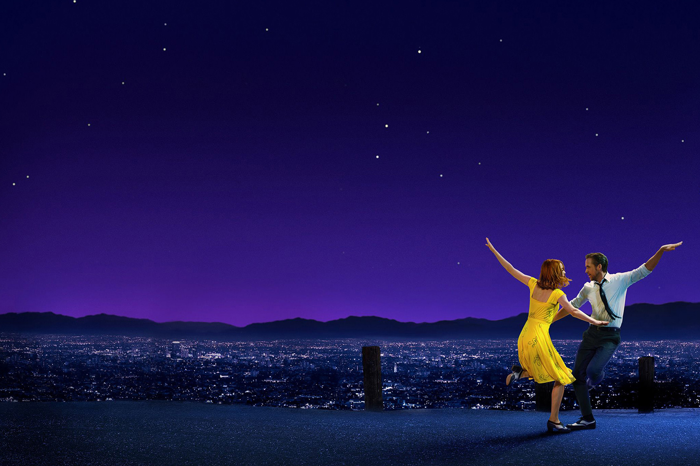
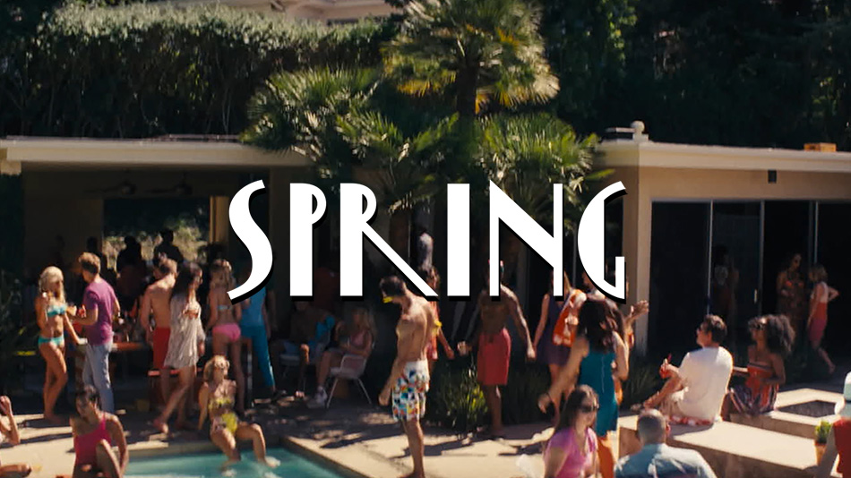

La La Land (2016), é um filme do gênero musical dirigido por Damien Chazelle, considerado o mais jovem a ganhar um Oscar na categoria Direção em 2017. Protagonizado por Emma Stone (Mia) e Ryan Gosling (Sebastian), o filme traz referências dos grandes musicais da história do cinema, como: Vamos Dançar? (1937), Melodia da Broadway (1940), Cantando na Chuva (1952), Cinderela em Paris (1957) e Sweety Charity (1969). O trabalho minucioso do diretor, e principalmente da sua equipe de Direção de Arte e Fotografia, nos presenteiam com elementos gráficos e cores que caracterizam o filme como uma obra de arte para os amantes do cinema. Nesta matéria, iremos abordar um olhar específico para o uso do design gráfico em algumas das cenas- que abrangem uma análise do logotipo do filme-, as peças gráficas utilizadas pelos personagens, ambientações, jogo de luzes, ilustrações, entre outros. Um texto “para os tolos que sonham”.
Em La La Land, o logotipo utiliza apenas da tipografia, que hoje, é comercializada como a fonte Yasashii Bold, desenvolvida pelo tipógrafo japonês, Ryoichi Tsunekawa. Uma tipografia com características da Art Déco – estilo artístico que surgiu na Europa na década de 1920 – equilibrado com um desenho moderno, além de fazer referência a filmes como Casablanca (1942) e O Vento Levou (1939). Para a aplicação sob as imagens, há uma sombra chapada (sem transparência) e com leve deslocamento, com o objetivo de destacar o texto e facilitar a leitura. A Shine Studio, responsável pela criação da identidade visual, pensou em como a tipografia seria aplicada tanto no logotipo quanto nas transições de cenas e estações para criar uma unidade dentro do projeto:
